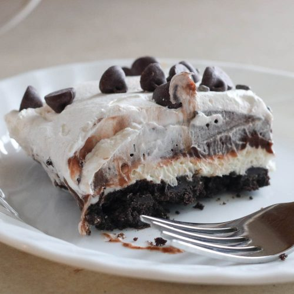

Chocolate Delight

Description
Potluck dessert favorite
Ingredients
- Make crust
- 3 4 oz. packages pudding
- 4 cups milk
- 1 ¼ cup powder sugar
- 16 oz. cool whip topping
- 11 oz. pack cream cheese
Directions
- Layer 1: Mix cream cheese and sugar until creamy and smooth. Fold in 1/2cup of cool whip.
- Layer 2: Make pudding according to box description and layer it on top
- Layer 3: Add the cool whip!